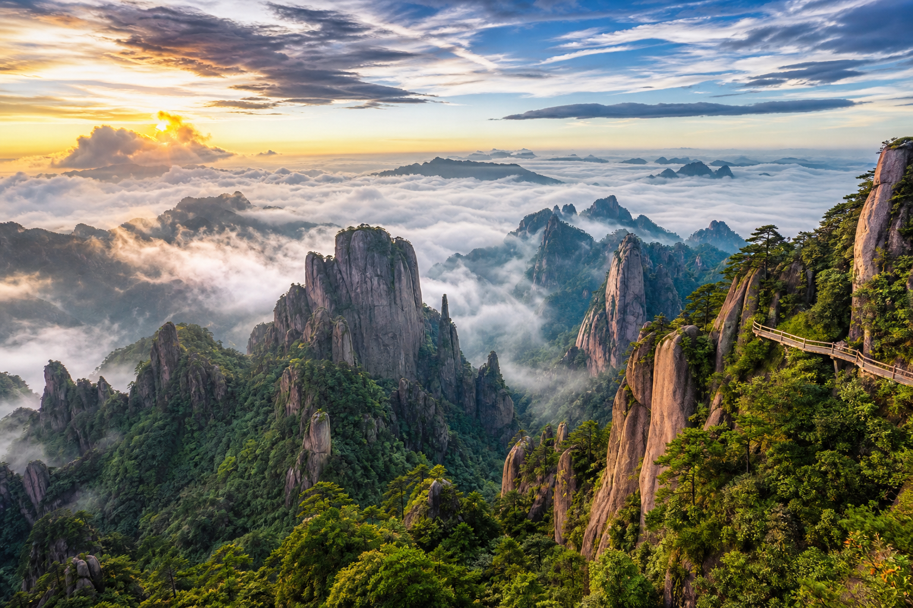
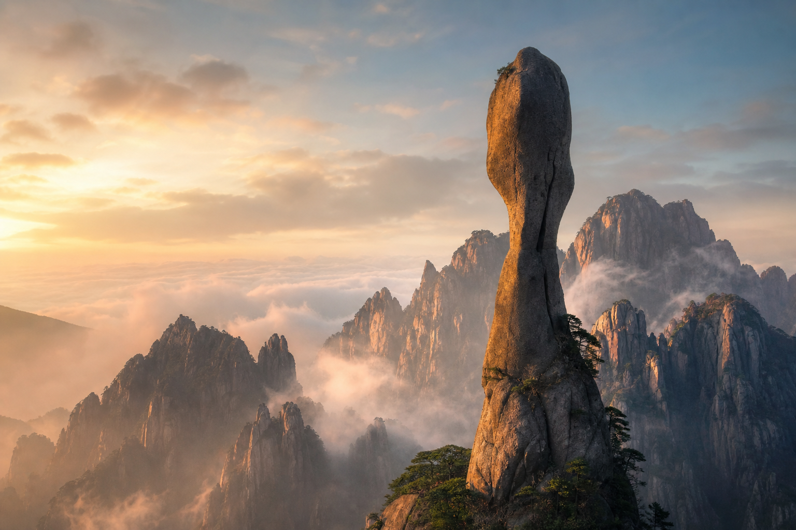
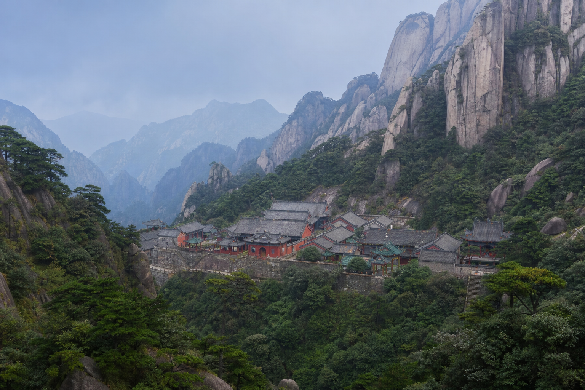

花岗岩奇观 · 道家选址 · 整理日期：2026年06月

三清山位于江西上饶，是道教名山，也是世界自然遗产、世界地质公园。它以花岗岩峰林地貌著称——亿万年的地壳运动与风化侵蚀，把整片山体雕琢成柱、峰、墙、屏，云雾常年缠绕其间，如仙境，亦如实境。
若只把它当作「好看的山」，便略过了它真正动人心处：自然以极端形态提问，人文以选址作答。本文重点走两条线——南清园的巨蟒出山，以及山腰盆地的三清宫——从行程、地质、哲学三个层面，试着读懂这座山。
巨蟒出山位于南清园景区，是三清山最具标志性的石柱之一。从远观到近看，建议按以下顺序安排，体会「由全貌而细节」的层层递进。

【观景提示】
清晨或雨后云雾未散时，石柱从云海中「破出」，最具视觉冲击力；午后光线侧照，能清楚看见中部「细腰」的轮廓——这正是本文接下来要讨论的核心问题。
巨蟒出山最不可思议之处，在于它头重脚不重、腰却极细：整体高约 128 米，最窄处（「蟒身」中部）直径仅约 7 米左右，却已在此矗立了约 1.2 亿年。这违反直觉，却完全符合地质逻辑。
【1. 花岗岩的「硬骨头」】
三清山主体是白垩纪花岗岩，矿物颗粒紧密，抗压强度极高。石柱虽细，但内部几乎没有明显裂隙贯穿——相当于一根完整的石芯，而非空壳。岩石学上，花岗岩在垂直受压时极难被压垮。
【2. 差异风化：周围先烂，柱体独留】
约 8000 万年前，地壳抬升，花岗岩体出露地表。周围岩石沿节理（裂缝）被风化、被流水冲刷、被重力拉塌，而巨蟒出山所在的一脉，恰好节理发育较弱、岩性更均一——周围的「邻居」都风化掉了，只剩这一根抗侵蚀的幸存者。
【3. 细腰不是「被勒出来的」，而是「被剩下来的」】
中部 7 米左右的细腰，并非外力掐断，而是风化速率的空间差异：柱体中段的节理相对发育，雨水沿裂隙渗入，冻融与化学风化在此加速；而上下两端岩体更完整，侵蚀较慢。久而久之，便形成「两头粗、中间细」的奇特形态——不是雕塑家刻的，是时间选的。
【4. 重心与基座：看似悬空，实则扎根】
巨蟒出山并非顶部大、底部小那种「倒锥」——它的根部与山体基岩仍相连，或底部直径远大于中部，整体重心落在基岩之内。从力学上看，这是一根底宽顶窄的压缩柱，而非悬空的杠杆。7 米的细腰，承载的是上方约数十米的岩柱重量，对花岗岩而言仍在安全范围内。
巨蟒出山的「不合理」，是自然用亿万年时间写就的合理——我们以为它「随时会倒」，是因为它把稳定藏在了我们看不见的结构里。—— 阅读札记
【脆弱与坚韧，可以共存】
7 米的细腰，视觉上极度「脆弱」；1.2 亿年的屹立，事实上极度「坚韧」。这提醒我们：表面的纤细，不等于内在的虚弱。人、组织、文明，皆可能如此——关键不在看起来有多「粗」，而在结构是否完整、根基是否深厚。
【时间是最公正的雕刻师】
巨蟒出山不是一夜形成。风、雨、冰、热，在无人注视的漫长岁月里，慢慢去掉多余部分，留下这一形态。我们今日所见的「奇迹」，本质是时间筛选的结果——这与都江堰「顺势而为」、九寨沟「钙华生长以毫米计」异曲同工：真正的力量，往往缓慢而静默。
【命名：人如何把意义赋予自然】
这根石柱本无名，是游人把它看作「巨蟒出山」，它才成为「巨蟒」。自然提供形态，人类提供叙事——美与意义，是物与心的合谋。这也为理解三清宫的选址提供了入口：道家不只「看山」，更在山中立宫，以人合天。

三清宫坐落于三清山海拔约 1500 米的盆地之中，东有九老峰、西有梯云岭、南有东出平台、北有石鼓岭，群峰环抱，如天然城墙。此宫初建于东晋，明代大规模扩建，是道教「三清」（玉清、上清、太清）信仰的重要道场。
【1. 负阴抱阳，藏风聚气】
传统选址讲究「负阴抱阳」：背后有山（阴）为靠，前方开阔（阳）为向。三清宫背倚主峰、面朝谷地，符合中国风水「有托、有照、有聚」的基本格局——不是征服山峰，而是嵌入峰林，借形而栖。
【2. 天人合一：宫不高于峰，人不过于天】
三清宫建筑体量刻意低于周围峰林，屋顶不抢山尖之势。道家认为，山为「仙人之骨」，人为「气之流动」——宫观是天地之间的中介，而非天地之间的主宰。这与巨蟒出山的哲学形成对照：自然可以极奇极险，人文却选择低姿态的和谐。
【3. 三清与三景：宇宙秩序的空间投射】
「三清」对应道教最高神祇，也暗合天、地、人三才。三清山地貌有「巨蟒、女神、观音」等象形峰，宫观以「三清」命名——本质上是把宇宙秩序写进山水与建筑：峰为骨，云为气，宫为神，人在其中修行，求的是与道同游，而非占有。
【4. 静观与无为：为何选盆地而非峰顶？】
三清宫不在最高峰，而在相对平坦的盆地。峰顶适合「一览众山小」的征服感，盆地适合「坐看云起」的静观。道家讲无为，不是什么都不做，而是不逆天道而行——选盆地，是选「可居、可修、可聚」；选环抱，是选「有护、有藏、有根」。这与巨蟒出山「细腰却稳立」形成一组有趣的互文：自然示之以奇，人文守之以常。
巨蟒出山，以「险」示人；三清宫，以「安」留人。一奇一常，一动一静，恰是道家「阴阳相生」在三清山的两种表达。—— 阅读札记
走巨蟒峰行程，看见的是自然极限形态——128 米高、7 米细腰，亿万年不倒。来到三清宫，感受的是人文克制智慧——不筑高台、不压山峰，只在盆地中守一份清静。
二者合在一起，构成我对三清山的整体理解：真正的稳固，不必看起来粗壮；真正的力量，不必占据最高处。巨蟒以细腰屹立，是以结构抗时间；三清宫以低处安身，是以顺势合天道。这与都江堰的「因势利导」、九寨沟的「钙华生长」一样，都在回答同一个问题——人如何与大于己的力量相处？
答案或许就藏在云海里：不硬扛，不妄取，知其性，从其势，然后在其中找到自己的位置——无论是 7 米细腰的石柱，还是 1500 米盆地的宫观。